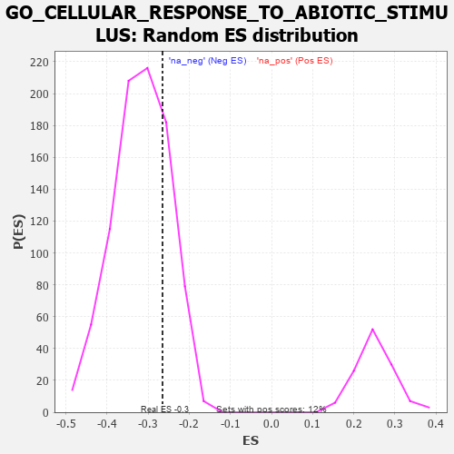

| | | Dataset | 7d |
| Phenotype | NoPhenotypeAvailable |
| Upregulated in class | na_neg |
| GeneSet | GO_CELLULAR_RESPONSE_TO_ABIOTIC_STIMULUS |
| Enrichment Score (ES) | -0.26493847 |
| Normalized Enrichment Score (NES) | -0.8344162 |
| Nominal p-value | 0.7694064 |
| FDR q-value | 0.97886574 |
| FWER p-Value | 1.0 |
Table: GSEA Results Summary
 Fig 1: Enrichment plot: GO_CELLULAR_RESPONSE_TO_ABIOTIC_STIMULUS
Fig 1: Enrichment plot: GO_CELLULAR_RESPONSE_TO_ABIOTIC_STIMULUS
Profile of the Running ES Score & Positions of GeneSet Members on the Rank Ordered List
| PROBE | GENE SYMBOL | GENE_TITLE | RANK IN GENE LIST | RANK METRIC SCORE | RUNNING ES | CORE ENRICHMENT | | 1 | H2AX | | | 20 | 4.738 | 0.1008 | No |
| 2 | SWI5 | | | 203 | 1.045 | 0.1005 | No |
| 3 | RGR | | | 303 | 0.814 | 0.1057 | No |
| 4 | HUS1 | | | 362 | 0.735 | 0.1144 | No |
| 5 | BAX | | | 387 | 0.711 | 0.1268 | No |
| 6 | RAD9A | | | 418 | 0.681 | 0.1379 | No |
| 7 | ERCC1 | | | 453 | 0.660 | 0.1479 | No |
| 8 | WRN | | | 469 | 0.649 | 0.1602 | No |
| 9 | NOC2L | | | 647 | 0.578 | 0.1504 | No |
| 10 | XRCC6 | | | 694 | 0.560 | 0.1568 | No |
| 11 | ELK1 | | | 752 | 0.545 | 0.1614 | No |
| 12 | BLM | | | 804 | 0.531 | 0.1665 | No |
| 13 | AKT1 | | | 1040 | 0.476 | 0.1471 | No |
| 14 | YAP1 | | | 1041 | 0.475 | 0.1575 | No |
| 15 | XPA | | | 1070 | 0.469 | 0.1641 | No |
| 16 | RAD51 | | | 1090 | 0.466 | 0.1719 | No |
| 17 | FNTB | | | 1270 | 0.436 | 0.1587 | No |
| 18 | SDE2 | | | 1579 | 0.378 | 0.1279 | No |
| 19 | N4BP1 | | | 1622 | 0.370 | 0.1307 | No |
| 20 | DDB1 | | | 1642 | 0.366 | 0.1362 | No |
| 21 | FMR1 | | | 1816 | 0.334 | 0.1216 | No |
| 22 | MICU1 | | | 1954 | 0.313 | 0.1111 | No |
| 23 | POLH | | | 1983 | 0.307 | 0.1142 | No |
| 24 | INO80 | | | 2120 | 0.288 | 0.1033 | No |
| 25 | REST | | | 2308 | 0.259 | 0.0852 | No |
| 26 | PPID | | | 2376 | 0.249 | 0.0821 | No |
| 27 | KDM1A | | | 2447 | 0.237 | 0.0784 | No |
| 28 | RAD1 | | | 2528 | 0.223 | 0.0731 | No |
| 29 | BAG3 | | | 2620 | 0.209 | 0.0662 | No |
| 30 | FNTA | | | 2755 | 0.190 | 0.0533 | No |
| 31 | ATR | | | 2800 | 0.183 | 0.0518 | No |
| 32 | NMT2 | | | 2947 | 0.158 | 0.0367 | No |
| 33 | CHP1 | | | 3089 | 0.138 | 0.0218 | No |
| 34 | DDX3X | | | 3388 | 0.091 | -0.0139 | No |
| 35 | PTPRK | | | 3454 | 0.084 | -0.0203 | No |
| 36 | XPC | | | 3509 | 0.076 | -0.0255 | No |
| 37 | MAPK3 | | | 3589 | 0.062 | -0.0342 | No |
| 38 | HSF1 | | | 3718 | 0.039 | -0.0496 | No |
| 39 | NIPBL | | | 3900 | 0.010 | -0.0723 | No |
| 40 | PARP1 | | | 4014 | -0.010 | -0.0864 | No |
| 41 | SFRP2 | | | 4065 | -0.018 | -0.0923 | No |
| 42 | WNK3 | | | 4153 | -0.034 | -0.1026 | No |
| 43 | WNT11 | | | 4282 | -0.056 | -0.1176 | No |
| 44 | GATA3 | | | 4614 | -0.120 | -0.1569 | No |
| 45 | LETM1 | | | 4644 | -0.127 | -0.1578 | No |
| 46 | MYLK | | | 4651 | -0.128 | -0.1558 | No |
| 47 | CNN2 | | | 4828 | -0.163 | -0.1745 | No |
| 48 | TLK2 | | | 4909 | -0.179 | -0.1807 | No |
| 49 | CASP1 | | | 4932 | -0.185 | -0.1795 | No |
| 50 | EP300 | | | 4941 | -0.186 | -0.1765 | No |
| 51 | XRCC5 | | | 4946 | -0.187 | -0.1729 | No |
| 52 | EFHD1 | | | 5057 | -0.211 | -0.1822 | No |
| 53 | ATM | | | 5210 | -0.249 | -0.1961 | No |
| 54 | PTEN | | | 5262 | -0.261 | -0.1968 | No |
| 55 | CERS1 | | | 5518 | -0.325 | -0.2221 | No |
| 56 | CASP8 | | | 5678 | -0.369 | -0.2341 | No |
| 57 | STK11 | | | 5922 | -0.443 | -0.2553 | Yes |
| 58 | CNGA1 | | | 5931 | -0.445 | -0.2466 | Yes |
| 59 | HVCN1 | | | 6034 | -0.482 | -0.2490 | Yes |
| 60 | RAC1 | | | 6036 | -0.484 | -0.2386 | Yes |
| 61 | POLK | | | 6041 | -0.486 | -0.2285 | Yes |
| 62 | EGR1 | | | 6165 | -0.527 | -0.2326 | Yes |
| 63 | STK39 | | | 6274 | -0.563 | -0.2340 | Yes |
| 64 | DYSF | | | 6481 | -0.654 | -0.2459 | Yes |
| 65 | TRPV4 | | | 6515 | -0.668 | -0.2355 | Yes |
| 66 | CLN3 | | | 6580 | -0.699 | -0.2283 | Yes |
| 67 | EGFR | | | 6708 | -0.765 | -0.2278 | Yes |
| 68 | NET1 | | | 6803 | -0.816 | -0.2219 | Yes |
| 69 | PDE2A | | | 6985 | -0.927 | -0.2246 | Yes |
| 70 | OPN4 | | | 7072 | -0.978 | -0.2142 | Yes |
| 71 | TSPO | | | 7194 | -1.065 | -0.2063 | Yes |
| 72 | CNGB1 | | | 7222 | -1.096 | -0.1858 | Yes |
| 73 | TRPM1 | | | 7324 | -1.197 | -0.1725 | Yes |
| 74 | GRM1 | | | 7404 | -1.272 | -0.1548 | Yes |
| 75 | CASP2 | | | 7442 | -1.322 | -0.1307 | Yes |
| 76 | CALM1 | | | 7567 | -1.499 | -0.1137 | Yes |
| 77 | TAF1 | | | 7643 | -1.633 | -0.0876 | Yes |
| 78 | ASIC1 | | | 7726 | -1.838 | -0.0579 | Yes |
| 79 | CASP3 | | | 7747 | -1.902 | -0.0190 | Yes |
| 80 | PKD2 | | | 7822 | -2.167 | 0.0189 | Yes |
Table: GSEA details [plain text format]

Fig 2: GO_CELLULAR_RESPONSE_TO_ABIOTIC_STIMULUS: Random ES distribution
Gene set null distribution of ES for GO_CELLULAR_RESPONSE_TO_ABIOTIC_STIMULUS